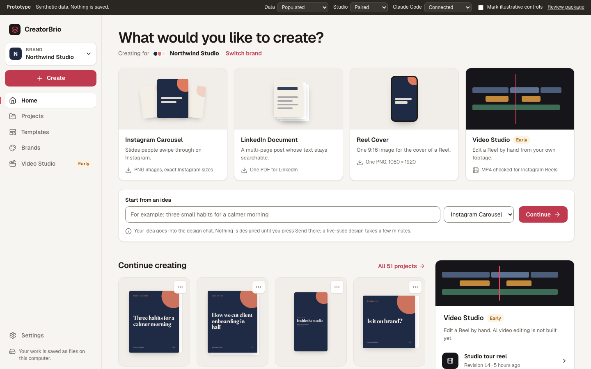
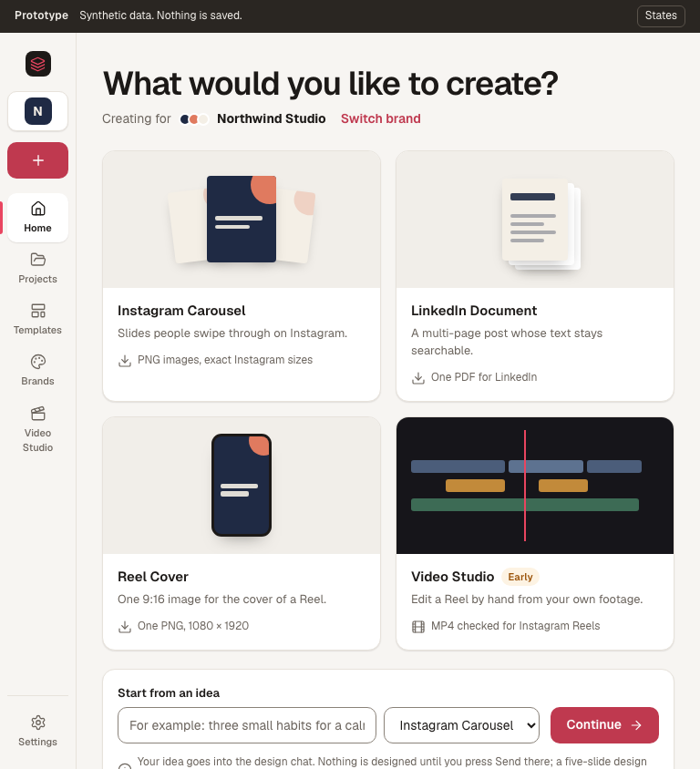

Information architecture and journeys
Six destinations, one creation flow and one editor. Every format CreatorBrio makes is reachable from the first screen, every capability that ships today keeps a home, and nothing is shown that does not exist.
Navigation model
Desktop and tablet
A persistent left sidebar. At the top, the product mark, the brand switcher ("Brand: Northwind Studio") and one Create button. Then Home, Projects, Templates, Brands and Video Studio, the last tagged Early. Settings and a one-line note that work is saved as files on this computer sit at the foot.
From 1023 pixels down the sidebar becomes an 84 pixel icon rail with labels under the icons.
Phone (767 pixels and below)
A top bar with the mark, the brand switcher and Settings, and a bottom tab bar: Home, Projects, Create, Templates, More. More opens Brands, Video Studio and Settings. Create is the raised centre tab. Five tabs is the limit at which every label still fits at 320 pixels.
The editor and the Video Studio workspace are focus modes: they take the full window with their own top bar and a way back, because both need every pixel for the canvas.


Why these six destinations
The hypothesis was Home, Projects, Templates, Brands, Video Studio and Settings. It holds, with two refinements. Each destination is an object a person owns or a place they start from; none is a placeholder.
| Destination | Verdict | Reason |
|---|---|---|
| Home | Keep | The answer to "what do you want to make?" and "where was I?". Replaces the dashboard. |
| Projects | Keep | The library of everything made, across formats and brands. Today's "My Carousels" tab, made to scale. |
| Templates | Keep, top level | A template is a starting point, not a project; starting is a different intent from finding. Folding it into Projects as a filter is the alternative (D8). |
| Brands | Keep | Brands already exist and shape every design, yet today they are edited in a modal behind a pencil and a gear. |
| Video Studio | Keep, tagged Early | A real, working editor that nobody can find. Its entry page says plainly what works and what is not built. |
| Settings | Keep, in the sidebar foot | It earns its place with real content: Claude Code status, the image service, Studio pairing, where data lives and what leaves the machine. It is visited rarely, so it sits below the main list (D7). |
| Publishing, Analytics, Automation | Not added | Nothing exists behind them. Empty sections would advertise work that is not planned. |
| Image editor | Not added | Image generation and editing happen inside a design run, through the optional local image service. A separate editor would duplicate that path. |
Destinations
Home
- Objective
- Start something in one decision, or get back to recent work in one click.
- Content
- "What would you like to create?" with "Creating for brand" and Switch brand.
- Four format cards: Instagram Carousel, LinkedIn Document, Reel Cover and Video Studio (Early), each saying what it exports.
- Start from an idea: one line, a format and Continue.
- Continue creating: the four most recent projects of this brand, with real first-slide previews, format and slide count.
- Start from a template, a Video Studio panel and a brand panel.
- Primary action
- A format card, which opens the creation flow on its second step.
- Secondary
- Start from an idea; open a recent project; All projects; use a template; open the Studio; edit the brand.
- Empty
- An inline "Set up your brand" card (a name, five colours, two fonts and a few style words; about a minute) replaces the modal that reopens on every visit. It does not block anything: the format cards stay, and the default brand is used until the person sets theirs up. "How it works" explains the three steps honestly, including that a design takes a few minutes. Open
- Loading
- Skeletons shaped like the cards they replace. Open
- Error
- A banner that says the projects could not be loaded, that nothing was deleted, and offers Try again; creation still works. Open
- Not connected
- When Claude Code is not found, a warning banner says existing work can still be opened, arranged and exported, that designing needs Claude Code, and links to Settings with How to connect. Open
- Phone
- Format cards in two columns, then one row each at 320 pixels with their export line; quick create stacks; recent projects in two columns.
- Reuses
- Brand selection (
useBrandSelection), carousel list, templates list,/api/chat/check. Knowing whether this browser is paired, without logging a 401 on every visit, needs the session status form in D15; until then the Studio panel links to the Studio without listing productions. - Extends to
- A new format is one more card and one more entry in the format registry; nothing else on Home changes.
Projects
- Objective
- Find any project among hundreds in seconds.
- Content
- Search, This brand or All brands, sort by last edited or name, grid or list, and format filters with counts: All designs, Instagram Carousels, LinkedIn Documents, Reel Covers, and Videos when this browser is paired.
- Primary action
- Open a project. Cards are links: Tab reaches them, Enter opens them.
- Secondary
- A visible "More" menu on every card: Open, Duplicate, Save as template, Delete (confirmed). New project.
- Empty
- "No projects yet" explains what a project is, with Create a project. A search or filter with no match says "No projects match", suggests all brands or another format, and offers Clear filters. Open
- Loading / error
- Card skeletons; an error banner with Try again that keeps the filters. Open
- Phone
- Two-column grid, search full width, filters scroll sideways, the view toggle hidden.
- Reuses
- Carousel list and duplicate, template save and delete routes;
ConfirmDialog. - Extends to
- Tags, folders or a shared library later, as further filters; the summary API takes them as query parameters.
Templates
- Objective
- Start a new project from a proven layout.
- Content
- The active brand's templates with a format filter; each card shows a preview, its format and its length.
- Primary action
- Use template, which opens the creation flow with the template chosen.
- Secondary
- Delete, with confirmation.
- Empty
- Explains what a template is and how to make one: open any project and choose Save as template from its menu. A format filter with no match says so and offers Show all formats. Open
- Error
- "Couldn't load templates" with Try again, never an empty list. Open
- Reuses
/api/templates,/api/templates/[id]/use,TemplateCardrestyled.
Brands
- Objective
- See every brand at a glance and edit one with a live preview.
- Content
- A tile per brand: name, colours, fonts and style words, marked Default and Active. A full-page editor: identity and logo, five colours, heading and body fonts, style words, and a sticky slide preview that updates as you edit.
- Primary action
- Use this brand (makes it active for new work), or Edit.
- Secondary
- New brand. Brands cannot be deleted today, and the page says so instead of offering a Delete that fails.
- Phone
- Tiles in one column; the editor's preview moves above the form.
- Reuses
/api/brands,ColorPicker,FontSelector,LogoUpload,StyleKeywordPicker,CarouselBrandBadge.
Video Studio
- Objective
- Say honestly what the Studio does, get this browser paired, and open a production.
- Content
- An Early hero: "Edit a short Instagram Reel by hand", with Works today and Not built yet lists taken from the README. A pairing card with the exact terminal command. Once paired, the productions list, New production and Sign out.
- Primary action
- Pair this browser; once paired, open a production.
- Workspace
- Opening a production leads to the existing Studio editor, unchanged: light chrome around a black video stage. 2.0 only aligns its existing top bar with the rest of the app.
- Phone
- Pairing and the list work; a note says the timeline needs a larger screen (D14).
- Reuses
StudioApp,PairingPanel,ProductionPicker,StudioApi. No change to the Production API.
Settings
- Objective
- Answer "is everything working, and where is my data?"
- Content
- Claude Code status; the local image service (Not checked until a read-only status check exists); Studio pairing and the sign-out-everywhere command; FFmpeg; where data lives and how to back it up; what leaves the computer; version and licence.
- Reuses
/api/chat/check, the Studio session route (through D15), README text for data and privacy.
Editor (existing, integrated)
- Objective
- Design and export one project. The editor is the existing one; 2.0 changes its frame, not its engine.
- Changes
- Top bar: back to Projects, name, format and brand chips, a More menu (Duplicate, Save as template, Delete) and a format-aware Export button: "Export PNGs", "Export PDF" or "Export PNG".
- Labelled tools: Size (a menu, absent for a Reel cover), Caption, Safe zones, Full screen.
- Phones: Preview and Chat tabs instead of three squeezed panels.
- Add a slide puts "Add a slide that" into the chat; a Reel cover has no add button.
- Unchanged
- The chat and its run notices, Continue and accept, the sandboxed preview, the filmstrip with drag, undo and delete, captions, every export and its 409 rules.
Routes
| Route | Screen | Today |
|---|---|---|
/ | Home | Dashboard, replaced |
/projects | Projects | New; was the My Carousels tab |
/templates | Templates | New; was the Templates tab |
/brands, /brands/[id] | Brands and brand editor | New; was the brand modal |
/studio | Video Studio entry and workspace | Exists; gains the shell and the entry content |
/settings | Settings | New |
/carousel/[id] | Editor, for every format | Exists, kept (D13) |
Formats on one engine
A LinkedIn Document and a Reel Cover are carousels. They use the same storage, the same editor, the same design agent and the same export code. The format is a label that sets sensible defaults; it does not create a second project model.
| Format | Default size | Sizes offered | Slides | Default export | Also available |
|---|---|---|---|---|---|
| Instagram Carousel | 4:5 | 4:5, 1:1, 9:16 | 1 to 20 | PNG images (ZIP) | LinkedIn PDF |
| LinkedIn Document | 4:5 | 4:5, 1:1 | 1 to 20 | LinkedIn PDF | PNG images (ZIP) |
| Reel Cover | 9:16 | 9:16 only | 1 | One PNG | PNG ZIP, PDF |
| Video Studio | Its own production model and editor, reached from the same Create entry. Not a carousel. | ||||
Projects created before 2.0 have no format and read as Instagram Carousels, so every existing project opens unchanged (D3). The server, not only the screen, keeps a Reel cover at 9:16: a size change to anything else is refused for that format.
Journeys
Each link opens the prototype in the state the journey starts from.
J1 · First visit
Home opens with the four format cards, an inline "Set up your brand" card and How it works. Nothing blocks the first action; until the brand is set up, designs use the default brand. Open J1
J2 · Instagram Carousel
- Home: Instagram Carousel.
- Step 2: the active brand is preselected; Portrait 4:5 is chosen, Square and Story offered; "A description" or "A template"; an optional "What is it about?"; an optional name.
- Create and open: the editor, with the description waiting in the chat.
- Send starts the design run, which the person sees arrive slide by slide.
Open J2 and choose Instagram Carousel.
J3 · LinkedIn Document
As J2, with portrait and square only, "pages" instead of slides, the chat prefilled with "A LinkedIn document." before the description, and Export PDF as the editor's main action. Open a document in the editor
J4 · Reel Cover
As J2, with the size fixed at 9:16 and the chat prefilled with "A one-slide Reel cover." The editor has no add-slide button, the Size control is a fixed label, and Export PNG is the main action. Open a cover in the editor
J5 · From an idea
Home: type an idea, choose a format, Continue. The creation flow opens on step 2 with the idea filled in. Nothing is designed until Send (D10).
J6 · From a template
Templates: Use template. The creation flow opens with "A template" selected and the template chosen; the new project opens with its slides. Open J6
J7 · Continue working
Home: a recent project under Continue creating, or Projects: search, filter, open. Open J7
J8 · Video Studio
Video Studio: read what works today, pair this browser with the code from the terminal, open a production in the existing editor. Open unpaired · Open paired
J9 · Switch brand
The brand switcher in the sidebar changes what Home, Projects and Templates show and which brand new work uses. An existing project keeps the brand it was made with, and the toast says so. Open as Kettle & Pine
Capability matrix
Every capability that ships today, where it lives in 2.0, and how the prototype shows it. "Illustrative" means the prototype shows the control and labels it as not working there.
| Capability today | Home in 2.0 | Prototype | Milestone |
|---|---|---|---|
| Create a carousel at 1:1, 4:5 or 9:16 | Create flow; Instagram Carousel offers all three sizes | Works | M2 |
| Change a project's size later (slides are not reflowed) | Editor, Size menu (not for Reel covers) | Works | M4 |
| Design by chat, Visual Director plan, Creative Brief | Editor chat, unchanged | Illustrative (Send) | Unchanged |
| Reference images; up to three pasted links | Editor chat, unchanged | Illustrative | Unchanged |
| Optional image service: generate or edit images | Inside design runs; its status in Settings | Settings shows "Not checked" | M2 (status) |
| Stop a run; interrupted notice; accept; Continue; export refused with 409 while unfinished | Editor, unchanged | Not shown | Unchanged |
| Preview, safe zones, full window | Editor tools, labelled | Safe zones work; full window illustrative | M4 |
| Drag to reorder; five undo steps per slide; delete a slide | Editor filmstrip, unchanged | Not shown | Unchanged |
| Rename | Editor title, unchanged | Not shown | Unchanged |
| Duplicate | Card menu and editor More menu | Works | M3, M4 |
| Delete a project | Card menu and editor More menu, confirmed | Works | M3, M4 |
| Save as template | Card menu and editor More menu, with a confirmation toast | Works | M3, M4 |
| Start from a template; delete a template | Templates, and the create flow's "A template" | Works | M3 |
| Captions and hashtags with Copy | Editor, Caption tool | Illustrative | M4 |
| PNG ZIP; single PNG for one slide; LinkedIn PDF | Editor Export, default chosen by format | Illustrative menu | M4 |
| Brands: create, edit, colours, fonts, logo, style words, default brand | Brands page and brand editor | Works, logo upload illustrative | M3 |
| Selected brand remembered per browser | Brand switcher, same storage key | Works | M2 |
| A carousel keeps its brand for life | Unchanged; stated on cards and in the editor | Works | Unchanged |
| Claude Code availability check | Home banner and Settings | Works (prototype toggle) | M2 |
| Studio: pair, sign out, revoke all, productions, editor, render and download | Video Studio entry and the existing workspace | Pairing simulated; workspace shown as a screenshot | M2 entry; workspace unchanged |
| Studio productions in one list with projects | Projects, Videos filter (paired browsers) | Works | M3, after D15 |
| Custom font uploads and style presets (API only) | Not surfaced until #159 decides | Not shown | #159 |
Zero, five and hundreds of projects
Zero
Home leads with the four formats, a first-run brand card and How it works. Projects and Templates have empty states that point to Create.
Five
Home's Continue creating shows four with "All 5 projects". Projects shows them all without paging.
Hundreds
Home stays the same size. Projects searches, filters and sorts on the server, shows 24 at a time with "Show 24 more", and renders only the first slide of cards on screen.
Data and API implications
All additive. No existing field changes meaning, no route changes its response for existing callers, and nothing in the Video Studio changes. Details per milestone are in the blueprint.
- An optional
formaton a carousel, set at creation. Absent means Instagram Carousel (D3). - A summary view of the carousel list:
GET /api/carousels?view=summaryreturns the name, brand, format, size, slide count and first slide, without every slide's HTML and undo history. Search, filter, sort and paging parameters follow in M3. - A read-only status route for Settings and Home: whether Claude Code is available and whether an image service is configured. No secrets or paths in its response.
- A session status form of the Studio's session route that answers "not paired" without a 401 (D15). The Production API, store and media registry are unchanged.
- Using a template accepts an optional name, and the new carousel takes the template's format.
- The selected-brand storage key stays
framewoven:selected-brand; renaming it would reset every browser's choice. - The idea typed on Home reaches the editor through session storage keyed by the new project's id, never through the URL, and is never sent automatically.